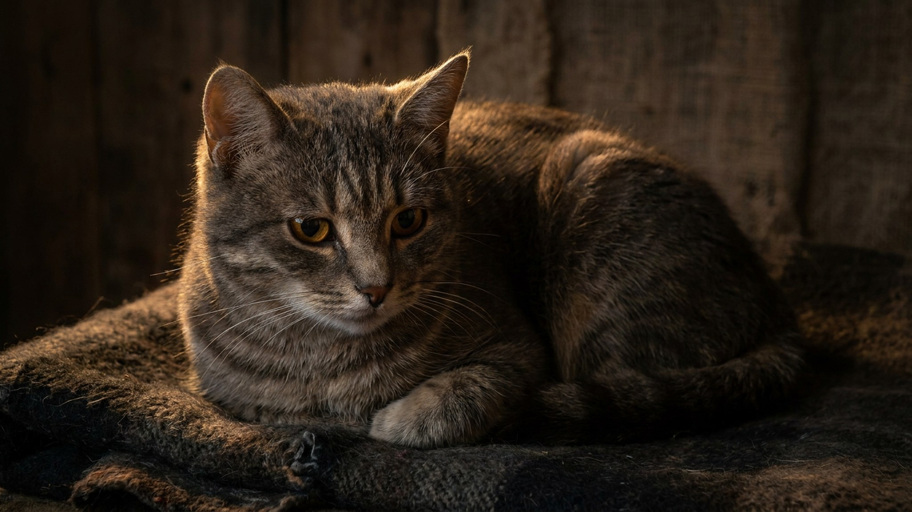

Питомцу скучно: 6 сигналов, которые хозяева принимают за вредность

19 июня 2026 · 3 минуты чтения · Поведение · Быт · Универсально
Кошка сбрасывает кружку с подоконника. Собака разобрала подушку. Вы думаете — вредничает. Скорее всего, нет: это поведение от нехватки стимуляции, а не из вредного характера. Ниже — 6 признаков, по которым легко понять, что питомцу скучно, и конкретные способы это исправить.
🐾 Всё о вашем питомце — в одном приложении
AI-ветеринар, дневник, напоминания о прививках и уходе. Установите AnimaLife — это бесплатно, в Telegram и MAX.
Открыть в Telegram → Открыть в MAX →
6 сигналов скуки: узнайте своего питомца
Эти паттерны поведения встречаются и у кошек, и у собак — в разных формах, но с одной причиной:
- Деструктив. Собака грызёт мебель или обувь, кошка дерёт обои там, где когтеточка не стоит. Не наказание — дефицит занятости.
- Навязчивость. Питомец ходит за вами по пятам, тычется лапой, не даёт работать. Это запрос на взаимодействие, а не избалованность.
- Перевозбуждение или апатия. Два полюса одного состояния: одни животные гиперактивны без причины, другие лежат целый день без интереса к чему-либо.
- Избыточный груминг или вылизывание. Кошка вылизывает себя до залысин, собака постоянно жуёт лапы — без видимой физической причины. Монотонное действие как способ занять себя.
- Попрошайничество и выпрашивание внимания. Громкое мяуканье, скуление, подталкивание миски — не всегда голод. Часто — попытка вовлечь хозяина в какое-то действие.
- Ночная активность. Кошка устраивает зумби в три ночи, собака начинает скулить. Если днём стимуляции не хватало, энергия выходит ночью.
Как обогатить среду для кошки
Кошкам нужна вертикаль, охота и возможность наблюдать. Несколько решений, которые работают:
- Когтеточки и полки на разных уровнях — кошке важно контролировать пространство сверху.
- Кормушки-головоломки или рассыпанный корм по коврику вместо миски: это 10–15 минут умственной нагрузки.
- Ротация игрушек раз в несколько дней — кошки теряют интерес к постоянно доступным объектам, но возвращаются к «новым».
- Окно с видом на птиц или улицу — полноценная «кошачья программа» на несколько часов.
- 10–15 минут активной игры со снастью или указкой — вечером, перед кормлением. Это имитирует охотничий цикл и разряжает накопленное напряжение.
Как обогатить среду для собаки
Собакам важны нюх, социальный контакт и задача. Физическая нагрузка — не единственный способ устать:
- Нюх-игры: спрячьте лакомство в рулон бумаги, в коробки, под стаканы — собака потратит на поиск больше энергии, чем на получасовую пробежку.
- Прогулки с акцентом на обнюхивание, а не на темп: дайте собаке самой выбирать маршрут и остановки.
- Базовая дрессировка по 5–10 минут в день: «сидеть», «лежать», «место» в новых вариациях — это умственная нагрузка.
- Жевательные снеки или игрушки-кормушки типа конга — занимают собаку в одиночестве на 20–40 минут.
- Контакт с другими собаками: если ваш пёс социален, встречи на прогулке или площадке закрывают потребность в общении.
Материал носит информационный характер и не заменяет очную консультацию ветеринара.
Когда поведение — не скука, а повод к ветеринару
Иногда за схожими сигналами стоит не дефицит занятости, а физический дискомфорт или тревожное расстройство. Обратитесь к специалисту, если:
- Поведение появилось резко, без изменений в распорядке.
- Груминг или вылизывание дошли до повреждения кожи.
- Питомец перестал есть, пить или реагировать на знакомые стимулы.
- Обогащение среды не даёт никакого эффекта в течение 2–3 недель.
🐾 Спросите AI-ветеринара прямо сейчас
AnimaLife — приложение, где AI-ветеринар отвечает на вопросы о кошке или собаке 24/7. Бесплатно, без записи и очередей.
Открыть в Telegram → Открыть в MAX →
🐾 Понравился разбор?
Подпишитесь на канал — каждый день разбираем по одному тревожному симптому у кошек и собак: что в пределах нормы, а когда пора к врачу. Подпишитесь, чтобы не пропустить разбор, который может спасти здоровье вашего питомца.
← Все статьи · Открыть AnimaLife в Telegram · RSS